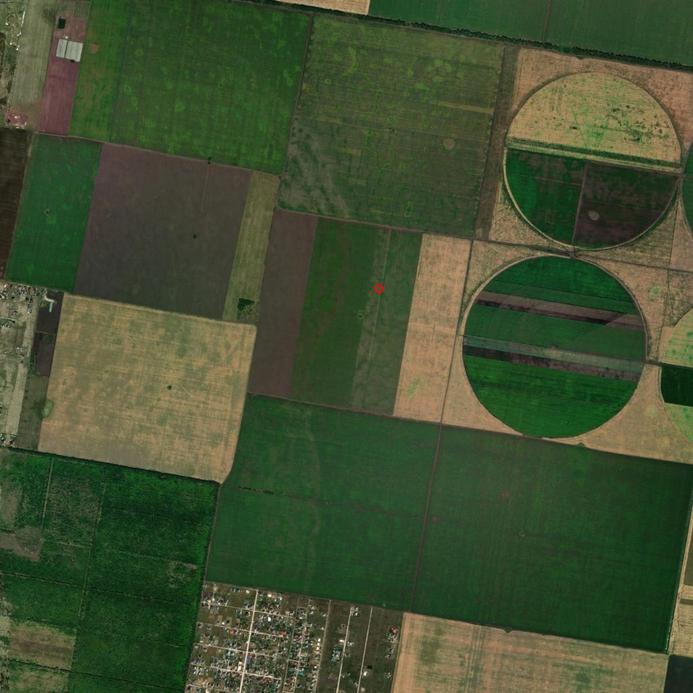

Наша земля в Ягодном
Мам, это полная картина по нашим двум участкам в поле №18 бывшего колхоза «Нива». Я собрал всё: документы, реестр, карты, закон, что говорила ты и тётя Нина. Здесь три вещи: что у нас есть, что с этим можно сделать, и что мешает. В конце - что мне нужно от тебя и что тёте Нине спросить в понедельник.
Главное одной фразой: сейчас эта земля стоит около 3 миллионов рублей за оба участка. Если поле включат в границы села под дома - в десятки раз больше. Но это долгая работа, и первые шаги надо делать в этом году.
Стас, 20 сентября 2026
Что у нас есть
| Бабушкин | Дедушкин | |
|---|---|---|
| Номер в поле | участок 14 | участок 15 |
| Кадастровый номер | 63:32:1603003:1383 | 63:32:1603003:1384 |
| Площадь | 5,6 га | 5,6 га |
| Свидетельство | 63-АЕ 018144, 17.05.2010 | 63-АЖ 037477, 22.09.2011 (по решению суда) |
| Оформлены на | Асташкину Екатерину Тимофеевну (оба) | |
| Сейчас в реестре | 5 собственников по наследству: одна доля 1/3 и четыре по 1/6 | |
| Записи об ограничениях | по 2 на каждом. Одна - аренда фермеру. Вторая - неизвестно, надо смотреть выписку | |
| Кадастровая стоимость | 207 тысяч ₽ за участок (по ней считают налог, который ты платишь) | |
Два участка - соседние полосы, вместе 11,2 гектара, это примерно десятая часть всего поля. В 2007 году пай покупали за 120 тысяч. Сегодня кто-то из наших выставил их через риелтора по 1,5 миллиона за участок.

Где это и почему это важно


Село растёт
В 2007 году в Ягодном было 2 600 жителей, сейчас больше 14 000. Со всех сторон от поля строят дома. Тётя Нина права: «рядом уже идёт строительство».
Рядом уже переводили
В нашем же кадастровом квартале участки уже включали в село под дома (2021-2022). Значит, это возможно и для нашего поля.
Но есть подвох
Справа от поля - поливные земли крупного хозяйства. Такие земли государство бережёт особенно. Если наше поле запишут в «особо ценные» - перевести его будет нельзя никогда.
Всё поле №18: 22 хозяина по протоколу 2009 года
Это список из документа, который прислала тётя Нина. По реестру у 19 из 22 участков уже один оформленный хозяин (наследство оформлено) и нет ограничений. Наши два - самые «сложные» на поле: пять собственников и по два ограничения. Ты говорила, что в поле «15 человек» - возможно, часть участков уже объединили. Это и нужно выяснить.
| Уч. | Кто по протоколу 2009 | Га | По реестру | Что ты знаешь / что узнала тётя Нина |
|---|---|---|---|---|
| 1 | Первова Людмила Александровна | 3,5 | 1 хозяин | |
| 2 | Борисова Вера Герасимовна | 5,6 | 1 хозяин | |
| 3 | Журавлева Клавдия Петровна | 5,6 | ? | |
| 4 | Тарасов Сергей Иванович | 3,5 | ? | |
| 5 | Тарасова Галина Павловна | 3,5 | ? | |
| 6 | Рыбкина Ольга Петровна | 5,6 | 1 хозяин | |
| 7 | Журавлева Валентина Леонидовна | 1,9 | ? | |
| 8 | Окатьев Александр Леонидович | 3,7 | 1 хозяин | |
| 9 | Карцева Ольга Борисовна | 5,6 | ? | |
| 10 | Капленкова Антонина Дмитриевна | 2,8 | ? | |
| 11 | Веселов Владимир Дмитриевич | 2,8 | ? | |
| 12 | Мякоткина Евдокия Николаевна | 11,2 | 1 хозяин | самый большой пай |
| 13 | Семушина Людмила Николаевна | 5,6 | 1 хозяин | |
| 14 | Асташкина Екатерина Тимофеевна | 5,6 | 5 хозяев | наш |
| 15 | Асташкин Григорий Игнатьевич | 5,6 | 5 хозяев | наш |
| 16 | Щеглова Александра Ивановна | 5,6 | 1 хозяин | сосед с дедушкиным участком |
| 17 | Ерашкова Мария Семеновна | 1,9 | ? | |
| 18 | Шиманова Анна Семеновна | 1,9 | 1 хозяин | |
| 19 | Ануфриева Антонина Семеновна | 1,9 | ? | |
| 20 | Досова Галина Михайловна | 3,5 | 1 хозяин | |
| 22 | Платковская Елена Федоровна | 11,2 | 2 хозяина | самый большой пай |
| 23 | Замотин Александр Васильевич | 9,1 | 2 хозяина |
Что говорит закон, и почему нельзя тянуть
1 марта 2026
уже действует
Чтобы поле стало землёй под дома, его надо включить в границы села через генеральный план. С марта такой генплан утверждает не район и не область, а Минсельхоз в Москве. Москва землю под пашней отдаёт неохотно.
1 января 2027
через три месяца
С нового года закрываются все другие способы перевести сельхозземлю. Останется только один - через генплан села. Подать «до нового года» ничего не даёт: смотрят по правилам того дня, когда принимают решение.
Неизвестная дата
самое опасное
Область составляет списки «особо ценных» полей. Если наше поле попадёт в такой список - перевести его будет нельзя вообще, ни через что. Когда список утвердят - никто не знает. Может, в этом году.
Что из этого следует. Перевести землю за три месяца невозможно - это год-два работы, и делать её должен тот, у кого есть деньги и ход в область. Но до конца года нужно успеть другое: навести порядок в наших документах, узнать, кто хозяева остальных паёв, и понять, не попадает ли поле в «особо ценные». Без этого любой разговор о продаже или переводе - разговор о чужой земле.
Что можно сделать: четыре пути
1. Продать как есть, сейчас
Два участка как пашню. Реально - 1,5-2,5 миллиона за оба, не 3. Купит тот, кто потом сам соберёт поле и заработает на нём. Быстро, но мало.
2. Продать одним блоком тому, кто собирает поле
Если выяснится, что кто-то уже скупает паи в поле №18 (а похоже на то - рядом в 2020-2024 годах оформлены большие участки), продать ему оба наших участка вместе с соседями, кто согласен. Торг от 3 миллионов вверх, плюс доплата, когда поле переведут. Несколько месяцев.
3. Собрать поле самим и привести партнёра
Тётя Нина говорит, что все хотят продать. Значит, можно договориться с хозяевами паёв заранее (это называется опцион: небольшой задаток сейчас, покупка потом по оговорённой цене). Когда большая часть поля под одной договорённостью - приходит застройщик, который платит за генплан и дороги, а мы участвуем землёй. Год-три. Самый выгодный путь, но и самый долгий. Деньги на генплан - не наши.
4. Строить самим
Нет. Нужны десятки миллионов вперёд и человек в Тольятти на 5-7 лет.
Какой путь выбрать - решим в конце октября, когда будут ответы на вопросы с листов 8 и 10. До этого ничего не продаём и не подписываем.
Что мешает
В наших документах
- Пять собственников. Любая бумага - пять подписей. Один против - ничего не двигается. Решение: одна нотариальная доверенность от всех пятерых на одного человека (лучше - на юриста в Тольятти).
- Два ограничения на каждом участке. Одно - аренда фермеру. Второе неизвестно. Если это запрет от приставов или залог - сначала снимать, потом всё остальное. Узнаем из выписки.
- Объявление о продаже за 1,5 миллиона. Оно висит в интернете с нашими кадастровыми номерами. Пока висит, любой покупатель знает: «семья готова на 1,5». Надо снять и узнать, кто из наших его давал.
- Договор с фермером. Кто подписывал, до какого года, что там написано - нужен сам документ.
Вокруг
- Поле могут записать в «особо ценные». Рядом поливные земли. Проверяем через юриста в областном Минсельхозе.
- Кто-то уже собирает поле. Рядом с нашими в 2020, 2021 и 2024 годах оформлены участки по 9-11 гектаров. Кто это - фермер, скупщик или застройщик - надо узнать. Если у него уже половина поля, мы ему продавцы, а не партнёры.
- Наша полоса без выхода на дорогу. Отдельно застройщику она не нужна. Нужна вместе с соседями: Щеглова (участок 16) и большие паи Мякоткиной, Платковской, Замотина.
- Я далеко. Всё на месте будут делать люди в Тольятти: ты, тётя Нина, юрист. Я организую и плачу за выписки и нотариуса.
- Шоков и другие большие хозяева не продают. Ты сама сказала: «может, какую-то цель преследуют». Скорее всего, они знают что-то про генплан. Надо спросить.
Что мне нужно от тебя
- Наши пятеро.Кто пять собственников на наших участках, какая доля у тебя. Имена, телефоны. Готовы ли все подписать одну доверенность у нотариуса.
- Фермер.Договор аренды: кто подписывал, с кем, до какого числа, сколько платит. Сфотографируй все страницы. И есть ли ещё какие-то документы по земле, кроме свидетельств и аренды.
- Объявление.Наши участки выставлены через риелтора Пичкурову Татьяну по 1,5 миллиона. Кто из наших это делал, что обещал риелтору. Объявление надо снять.
- Выписки из реестра.Нужны выписки ЕГРН на оба участка через твои Госуслуги - я скажу, какие именно и оплачу. Из них мы узнаем, что за второе ограничение.
- Голосовые от 17 сентября.Кто тебе их прислал (человек, который говорил «Станислав, сначала кадастровые номера всех паёв») - как зовут, кто он, откуда.
- Поездка в Тольятти.Ты говорила, что можешь поехать. Понадобится в октябре: нотариус для доверенности и разговор с нашими четырьмя лично. Скажи, когда тебе удобно.
Тёте Нине в администрацию в понедельник
Самое важное - как говорить. Не «мы хотим продать» и не «все согласны продать». Говорить: «оформляем наследство, наводим порядок в документах по полю №18, ищем хозяев паёв». В администрации те же люди, что знают скупщиков и застройщиков. Если они услышат «продают» - покупатель узнает раньше нас, и цена будет его, а не наша.
И пусть сразу после разговора надиктует тебе голосовым всё, что услышала. Через день детали уходят.
Что спросить
- По списку из 22 фамилий (лист 4): кто умер, кто наследник, где живёт, телефон.
- Кто сейчас платит земельный налог по паям поля №18 - это и есть настоящие хозяева.
- Кто арендует поле №18, договор с кем, до какого года.
- Кто оформлял большие участки рядом с нашими в 2020, 2021 и 2024 году.
- Идёт ли работа над генпланом Ягодного, кто делает, где можно посмотреть.
- Как связаться с Шоковым.
План до конца года
| Когда | Что делаем | Кто |
|---|---|---|
| 22-28 сентября | Тётя Нина - администрация, новые хозяева паёв. Ты - наши пятеро, фермер, объявление. Заказываем выписки. | тётя Нина, ты, я |
| до 5 октября | Читаем выписки: что за второе ограничение. Ищем юриста по земле в Тольятти (три кандидата, я созваниваюсь). Созвон наших пятерых: согласие на одну доверенность. | я, Катя, ты |
| до 12 октября | Юрист выбран. Ты едешь в Тольятти: нотариальная доверенность от пяти. Юрист отправляет запросы в область: не попадает ли поле в «особо ценные», идёт ли генплан. | ты, юрист |
| до 26 октября | Обзвон всех паёв через тётю Нину: кто жив, кто продаёт, за сколько. Узнаём, кто оформлял большие участки рядом. Разговор с Шоковым. | тётя Нина, юрист |
| конец октября | Решение: какой из путей с листа 6. Если поле в «особо ценных» или его уже кто-то собрал - продаём блоком и закрываем тему. Если нет - идём собирать поле и искать партнёра. | вместе |
| ноябрь | Договорённости с большими паями (Мякоткина, Платковская, Замотин, Щеглова). Встречи с застройщиками, которые уже строят рядом. | юрист, я |
| декабрь | Договор с партнёром и заявление в администрацию на изменение генплана. Или - сделка по блоку. | юрист, я |
Расходы на этом этапе: выписки (несколько сотен рублей за штуку), нотариус, юрист. Всё это оплачиваю я. Ни рубля из своих в генплан и дороги - это деньги партнёра.
Три правила до конца года
- Ничего не продаём и не подписываем.Ни с риелтором, ни с фермером, ни с соседями. Любой, кто предлагает «быстро и хорошо», - предлагает свою цену, не нашу.
- Никому не говорим «продаём».Говорим «наводим порядок в документах». Это касается тёти Нины, администрации, соседей по полю.
- Все документы - фотографией мне.Свидетельства, договор с фермером, письма из налоговой, квитанции за землю, всё, что найдётся в папке.
Спасибо, мам. Без тебя и тёти Нины эта земля так и лежала бы бумажкой в папке. Звони в любое время, я на связи каждый день.